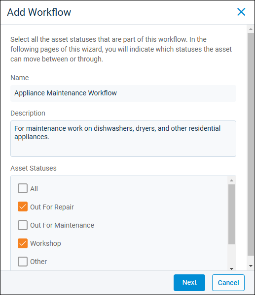
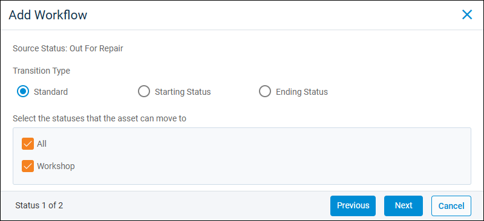

Source: https://rmxhelp.rentmanager.com/Topics/Express/Action/Assets-Workflow-Add.htm
Add an Asset Workflow
Asset workflows guide an asset through a series of statuses, which allows you to track the asset's progress through a process, such as purchasing, maintenance, or sales. You can create multiple workflows depending on business needs. For example, you might use one workflow for maintenance tasks that are under warranty by the manufacturer and then another for tasks handled by your in-house team.
More Information
Before you can create an asset workflow, you must add all necessary asset statuses. For more information, refer to Add an Asset Status.
Related Privileges
| Group | Privilege | Column |
|---|---|---|
| Asset Management | Manage Asset Workflows | Enabled |
For more information, refer to Control User Access.
To create a new asset workflow, do the following:
-
Go to
 arrow_forward Rental Info arrow_forward
arrow_forward Rental Info arrow_forward  Rental Info Setup arrow_forward Assets arrow_forward Asset Workflow.
Rental Info Setup arrow_forward Assets arrow_forward Asset Workflow.
The Asset Workflows page displays. -
Click
 Add Asset Workflow.
Add Asset Workflow.
-
Enter information in the following fields:
Field Description Name
A descriptive name for the workflow.
Description
An optional explanation of the workflow's purpose.
Asset Statuses
The status that are included in the workflow. At least two statuses must be selected.
-
Click Next. For each Source Status (the statuses you selected in the Asset Statuses section), choose the Transition Type and which statuses the asset can move to after this Source Status is complete.

Field Description Transition Type
How the workflow proceeds after the Source Status is complete. Select from the following types:
Standard
Use this type for steps that are not the first or last in the workflow.
Starting Status
Use this type for the first step in the workflow. Workflows must have a starting status.
Ending Status
Use this type for the last step in the workflow. Workflows must have an ending status.
Select the Statuses that the asset can move to
Statuses selected here can be chosen as the next step in the workflow after the Source Status is complete. If you want to be able to move the asset back and forth in the workflow, select all statuses that the asset may be able to move to from the Source Status.
-
Click Finish.
The workflow is added to the register and can be assigned to assets.